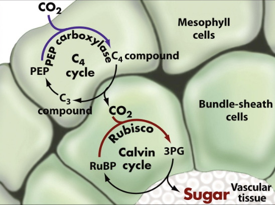
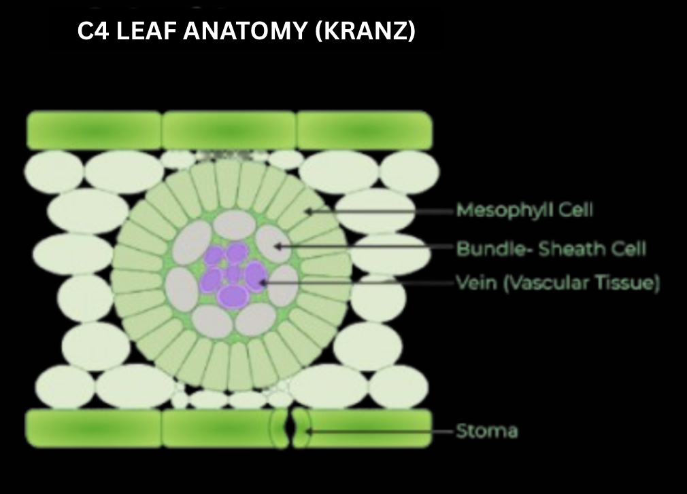
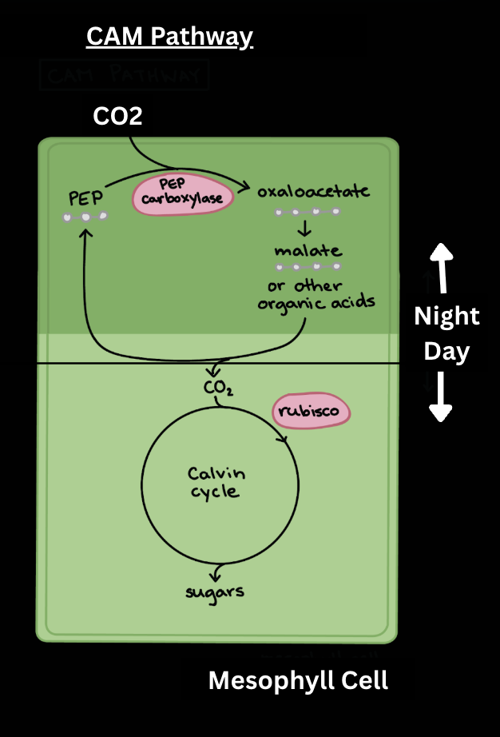

Different plants live in different environments which require specific adaptations to survive and reproduce in such environments.
Types of adaptations:
- Structural
- Behavioural
- Physiological
Most common structural adaptations:
- Thick cuticles and waxy leaves → reduce water loss in hot, arid environments (common in xerophytes)
- Spines/thorns → protect against predation
- Varying root systems → shallow/deep/extensive depending on soil conditions
- Leaf size → large leaves increase surface area for photons and thus light capture, maximising photosynthesis
Most common behavioral adaptations:
- Phototropism → plants bend toward a light source due to the accumulation (not production) of auxin on the shaded side.
- Climbing → reaching a better position for sunlight.
- Opening/closing of stomata → regulation of water loss and gas exchange
- Photoperiodism → plants respond differently to changes in light exposure (day length)
Most common physiological adaptations (internal processes):
- Production of toxins/poisons to prevent predation
- Water regulation (e.g. CAM synthesis in desert plants)
- Nutrient uptake (e.g. mycorrhizae in roots to enhance nitrogen fixation)
- Phytohormone levels (auxin, cytokinin, gibberellins, abscisic acid, ethylene, ect.)
Types of Photosynthesis based on Environment:
- If you haven’t learned about photosynthesis in general yet, please check out that theory page.
- To understand the types of photosynthesis, we need to understand the concept of photorespiration.
- In hot, dry environments, stomata tend to close in order to conserve water (remember, water likes to move from high to low concentration).
- However, closed stomata reduce carbon dioxide intake, limiting photosynthesis. This is where photorespiration comes into play.
- RuBisCo, the enzyme that fixes carbon dioxide, can also bind to oxygen, which is readily available.
- Unfortunately, photorespiration is inefficient, it uses more sugar, and doesn't actually produce any. To mitigate this, some plants have evolved alternative photosynthetic pathways:
C3 → These plants do not have a mechanism for mitigating photorespiration. Most plants use c3, including wheat, rice, and soybeans. The first organic compound produced is a 3C, 3-phosphoglycerate (3-PGA). It uses RuBisCo.
C4 → Its leaf structure is also known as Kranz anatomy. These plants live in hotter, sunnier conditions, including: sugarcane and corn. These plants DO have a mechanism for mitigating photorespiration: First organic carbon compound initially produced by PEP CARBOXYLASE (instead of RuBisCo) is oxaloacetate (4C). PEP carboxylase fixes carbons first in the mesophyll and is moved into the bundle sheath, where the Calvin cycle occurs. C4 plants make use of SPATIAL separation, in order to concentrate carbon dioxide around the bundle sheath for RuBisCo to work.


CAM → Stands for Crassulacean Acid Metabolism
These plants live in dry, arid, desert environments, including cacti, succulents, and some orchids. The first organic carbon compound produced by PEP CARBOXYLASE (instead of RuBisCo) to make a 4C compound (malate). It is key to understand that CAM plants TEMPORALLY (time of day) separate carbon fixation and the Calvin cycle. At night, stomata open allowing PEP carboxylase to work and fix carbon. During the day, the carbon is taken into the Calvin cycle. There is no spatial separation.

Written by Josephine Ankomah